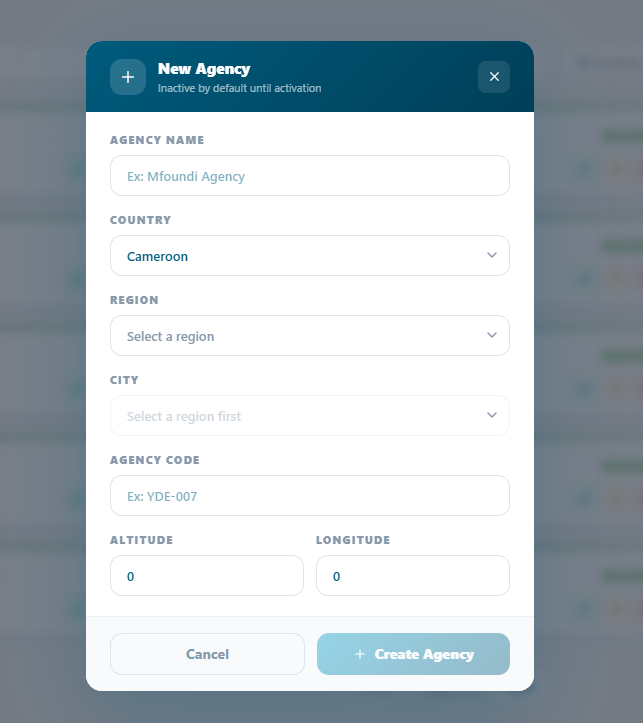
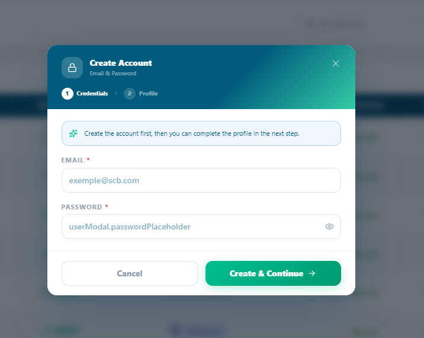

Super Admin Setup¶
How the Super Admin configures the platform: creating agencies, managing users, and defining roles and permissions.
In this chapter
|
After this chapter you will be able to
|
3.1 Super Admin Overview¶
The Super Admin is the highest-privilege account in Queco. There is typically the super Admin is a role that can be given to who so ever and he will have all access in the platform to do what so ever. All platform-wide configuration creating agencies, provisioning users, and defining access rules is performed from the Super Admin account.
When the super logs in, they land on a centralized dashboard that provided a bird’s eye view of the entire platform: all agencies, user counts, active counts, active counters and real-time ticket volumes.
Figure 3.1 — Super Admin Dashboard with platform summary cards and quick-action buttons |

3.1.1 Super Admin Responsibilities¶
| Responsibility | Description |
|---|---|
| Agency Setup | Create and configure all agencies that operate under the platform. |
| User Provisioning | Create user accounts and assign them to the correct agency and role. |
| Role Management | Define and customize roles (Manager, Agent) with granular permissions. |
| Service Catalogue | Build and maintain the master list of services and operations. |
| Platform Monitoring | Monitor overall platform health, ticket volumes, and agency activity. |
| Access Control | Activate, deactivate, or delete users and agencies as organizational changes occur. |
| WARNING | Super Admin credentials must be stored securely. Enable two-factor authentication if available and never share the Super Admin account with other staff. |
3.2 Creating an Agency¶
Agencies are the core organizational units of Queco. Every user, counter, and service belong to an agency. You must create at least one agency before you can add users, counters, services and operation and assigning a user to the agency and counter. Think of an agency as a branch, department, or office location within your organization.
3.2.1 Step by step: Create a new agency¶
Step 1: From the sidebar, click Agencies
Step 2: Click the Add agency button in the top-right corner of the agencies page
Step 3: The new agency modal pop with the form. Fill in all require field
 Figure 3.2 — New Agency form with all fields visible |
Step 4: Review all entries carefully, then click save
The agency is saved with active status by default.
Step 5: To activate or inactivate the agency created just click the status icon (yellow) icon on the modal card of the agency
Only Active agencies can process tickets and appear in user dashboards.
Step 6: Confirm the activation by check it in the list of agencies with a green button
| TIP | Create all your agencies before adding users. This way you can assign each user to their correct agency during account creation without needing to edit them later. |
3.2.2 Agency form field Reference¶
| Field | Description | Status |
|---|---|---|
| Agency Name | Full legal or operational name of the agency (e.g., "Mfoundi Agency"). Displayed across the platform. | Required |
| Agency Country | The country in which the agency is located (Cameroon) | Required |
| Region | The administrative region or province where the agency operates. Must be selected before a city can be chosen. | Required |
| City | The city where the agency is located. Becomes available only after a region is selected. | Required |
| Agency Code | A unique short identifier for the agency (e.g., "YDE-007"). Used for internal referencing and API integrations. | Required |
| Altitude | The geographic altitude (elevation) of the agency's location. Defaults to 0. | Optional |
| Longitudes | The geographic longitude coordinate of the agency's location. Defaults to 0. | Optional |
| NOTE | The Agency Code cannot be changed after the first ticket is processed in that agency it is embedded in ticket numbers. Choose it carefully during setup. |
3.3 Managing Agencies¶
After agencies are created, you can edit their details, change their status, or delete them entirely from the Agencies page. Use the search bar at the top of the list to quickly find agencies by name or code.
3.3.1 Actions Available on the Agency page¶
| Action | How To Perform It |
|---|---|
| View Details | Click the agency card modal to open its full profile, including counters, users, and service statistics. |
| Edit | There is a green pen icon, just click it the modal form will appear to modify it |
| Activate | All deactivated agency are in the deactivate list, so just go there and activate it by changing the status of the agency |
| Deactivate | Click (status icon) → Deactivate. The agency is suspended no new tickets can be created. Existing open tickets are paused. |
| Delete | Click the red icon and a modal will appear to confirm the Agency code and delete button will be enable |
| View Agency Stats | Click on the agency tab and all the stats will be displayed |
| Manage Agency Users | In an agency, the user is assigned to a counter in that agency, so in every counter you will see an agent assign to it |
| WARNING | Deleting an agency permanently removes all its users, counters, services, and ticket history. This action cannot be undone. Deactivate instead of deleting unless you are certain the agency data is no longer needed. |
(to be proposed to the Queco developers)
Figure 3.3 — Agency list with action menu options |

3.3.2 Agency Status Rules¶
The following rules govern what can and cannot happen based on an agency's status.
| Status | What IS Allowed | What is NOT Allowed |
|---|---|---|
| Active | Creating tickets, processing queues, running analytics, user logins. | None all features are available. |
| Inactive | Editing configuration, viewing historical data, reactivating. | Creating new tickets, opening counters, user access to agency features. |
3.4 Creating Users¶
Every person who accesses Queco needs a unique user account. Accounts are created by the Super Admin and then assigned to an agency and role. The agent provides the email for login where he/she will be receiving and OTP during login and all password are created and manage by Super Admin. Agent cannot reset password for now
3.4.1 Step by step: Create a New User¶
Step 1: From the left sidebar, click Users
Step 2: Click the button new user at the top right corner
Step 3: The New User form opens. Fill in all required fields and click create & continue.
 Figure 3.4 — New User creation form |
| NOTE | The new user's email address becomes their login username and cannot be changed after creation. Double-check it before saving. |
3.4.2 User Form reference¶
| Field | Description | Status |
|---|---|---|
| Email Address | Required text field for the user's email address. Placeholder shows an example format (e.g., exemple@scb.com). | Required |
| Password | Required password field with a visibility toggle (eye icon) to show or hide the entered password. | Required |
| Cancled Button | Outlined button that closes the modal without saving any data. | |
| Create & Continue Button | Primary action button (green) that validates the credentials and proceeds to Step 2 (Profile). |
3.5 Managing Users¶
User management covers the full lifecycle of a user account: from creation to day-to-day administration, to eventual deactivation or deletion. All user management actions are performed from Users & Roles → Users.
3.5.1 User Managing Actions¶
| Action | How To Perform It |
|---|---|
| Edit Profile | Click the user's name to open their profile, click Edit, make changes, and click Save. |
| Deactivate | Open the user profile → toggle Status to Inactive. The user is immediately logged out and cannot log back in. |
| Reactivate | Open the user profile → toggle Status back to Active. The user can log in again immediately. |
| Change Role | Open the user profile → change the Role field → save. New permissions apply on the user's next login. |
| Assign to another Agency | Open the user profile → change the Agency field → save. The user loses access to the previous agency. |
| Delete | Click → Delete from the Users list. Permanent the user and their activity log are removed. |
| View Activity Log | Open the user profile → click the Activity tab to see a full audit trail of all actions by that user. |
| WARNING | Deleting a user is permanent and removes them from all audit logs. Deactivate accounts instead of deleting them unless you are certain the data is no longer needed for compliance or auditing. |
3.6 Roles & Permissions¶
Queco uses Role-Based Access Control (RBAC). Every user is assigned exactly one role. The role is a named bundle of permissions that controls which pages, actions, and data the user can access. Queco ships with three default roles: Super Admin, Manager, and Agent.
3.6.1 Default Roles Comparison¶
| Feature / Action | Super Admin | Manager | Agent |
|---|---|---|---|
| Create / manage agencies | ✔ | ✘ | ✘ |
| Create / manage users | ✔ | Limited | ✘ |
| Assign roles & permissions | ✔ | ✘ | ✘ |
| Create / manage counters | ✔ | ✔ | ✘ |
| Define services & operations | ✔ | ✔ | ✘ |
| Activate services per agency | ✔ | ✔ | ✘ |
| Create tickets | ✔ | ✔ | ✔ |
| Process tickets at counter | ✔ | ✔ | ✔ |
| Transfer tickets | ✔ | ✔ | ✔ |
| View analytics | ✔ | ✔ | ✘ |
| Export reports | ✔ | ✔ | ✘ |
| View all agencies (global) | ✔ | ✘ | ✘ |
| Manage platform settings | ✔ | ✘ | ✘ |
| NOTE | 'Limited' means the Manager can perform this action only within their assigned agency (e.g., view users in their own agency, not across the whole platform). |
3.6.2 Customizing Role Permission¶
The Super Admin can customize the default permissions for the Manager and Agent roles. These customizations apply platform wide to all users with that role.
Step 1: From the sidebar, go to Roles & permission then Roles
Step 2: Click the Role u want or you can create a new Role by clicking the button “New Role” at the top right corner and assign the permission you want
Step 3: The role with be highlighted with its unique color same as the Permission section, then u can give him the permission you which and there will be a percentage bar
| <img src="../images/image11.png" |
| style="width:5.22917in;height:2.70972in" />Figure 3.6 — Role permissions panel with feature toggles |
Step 4: Click assign on the permission you want to give the specific role
assign permissions are shown in green; off in red.
Step 5: Changes are saved automatically
The custom role is now available in the Role field when creating or editing users.
| TIP | Start from the Agent role as your baseline and add only the extra permissions needed. This follows the principle of least privilege users get only the access they need to do their job. |
3.6.4 Assigning a Role to User¶
Role are assigned per user at account creation or at any time via the user’s profile. There is no limit on how many users can share the same role.
| NOTE | Changing a user's role takes effect on their next login or page refresh. If a user is currently logged in when their role changes, they may experience unexpected behavior until they log out and back in. |
3.7 Chapter Summary¶
This chapter covered the complete Super Admin setup workflow. By now you should have:
-
Created one or more agencies with all required configuration fields.
-
Activated agencies so they can begin accepting tickets.
-
Created user accounts for all Managers and Agents in each agency.
-
Assigned each user to the correct agency and role.
-
Reviewed and, if necessary, customized role permissions for your organization.
Chapter 4